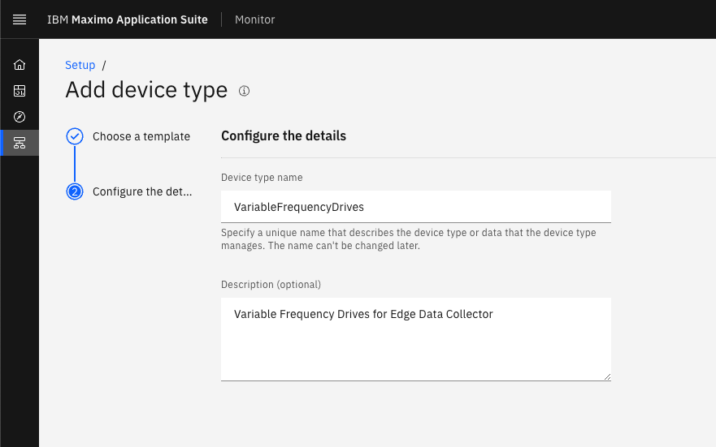

Objectives
In this Exercise you will learn how to:
- create the credentials for the Edge Data Collector (EDC) edge entity
- pre-create the device type for the Variable Frequency Drives (VFD's)
Before you begin:
This Exercise requires that you have:
- completed the pre-requisites required for all labs
- completed the previous exercises
The Edge Data Collector edge uses the Maximo Monitor capability to use the priveledged gateway device type, which enables the automatic creation of new devices when data is delivered from the gateway on behalf of them.
Attention
This exercise will use the new version of device types introduced in MAS 8.8 which do not require physical and logical interfaces before saving the data in the database and making it available within Monitor. However, this currently require you to create the device type for the VFDs manually up front, as automatically creating that through the gateway will result in the classic version of the device type which will require the physical and logical interfaces before the data is available in Monitor.
Create the EDC edge gateway in Monitor
In this section you will create the credentials for the EDC edge gateway, so the EDC edge can connect to Maximo Monitor.
Login to MAS and navigate to Monitor:

Navigate to the IoT Tool from the Monitor Home page:
It opens a new tab. Navigate to Device Types:
Select Add Device Type:
Select Gateway, give it the name XX_EDC_GW and a short description.
Click Next and Finish:
Tip
XX in the device type name should be your initials in case other people are following this lab in the same Maximo Application Suite environment.
Select Register Devices:
Define the Device Id XX_EDC_GW_01. Click Next:
OPTIONAL: Add a Model name Edge Data Collector and Manufacturer name IBM. Click Next:
Just click Next:
Select Privileged Gateway and click Next:
Click Next to let the system auto generate an authentication token:
Just click Finish:
You will see the created Device credentials:
Save these credentials
It is very important, that you save these credentials as you need them in the next exercise AND the authentication token is non-recoverable once you navigate away from this page.
The gateway is now created in the IoT Tool and it will appear as Disconnected until the physical EDC Edge connects:
Pre-create device type for the VFDs
You need to create the device type for the VFD´s manually in Monitor to ensure the right version of Device Type is being used later on.
Navigate to Setup from the Monitor Home page:
Select Devices:
Click on Add device type:
Select Basic template as this will create the new version of the device type and click Next:
Define the Device type name as VariableFrequencyDrives (exactly like this), give it a description and press Create:

Note
We will define the metrics in a later exersice once we have defined the data points in the EDC Integration.
Tip
Here is the list of the current canonical models defined within EDC using PascalCase:
| Device type | Device Type in Monitor |
|---|---|
| Variable Frequency Drives | VariableFrequencyDrives |
| Variable Air Volume | VariableAirVolume |
| Uninterruptible Power Supplies | UninterruptiblePowerSupplies |
| Power Meters | PowerMeters |
| Circuit Breakers | CircuitBreakers |
| Protection Relays | ProtectionRelays |
| Heat Meters | HeatMeters |
| Gas Flow Meters | GasFlowMeters |
Congratulations you have successfully created the needed gateway in the IoT Tool and the needed device type in Monitor.